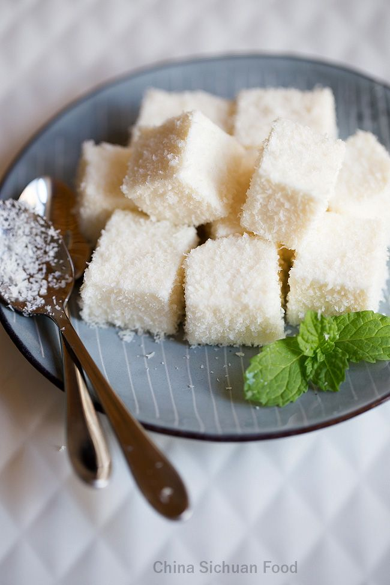

Maria Mole
Um doce macio e aerado, tradicional da culinária brasileira, perfeito para festas e lanches doces.

Ingredientes
Rende 12 porções
- 1 pacote de gelatina em pó sem sabor (12g)
- 1 xícara de água fria (para hidratar a gelatina)
- 2 xícaras de açúcar
- 1 xícara de água (para o açúcar)
- 1 clara de ovo
- Coco ralado para polvilhar
Modo de Preparo
Tempo estimado: 30 minutos + geladeira
- Hidrate a gelatina na água fria e reserve.
- Em uma panela, misture o açúcar com a água e leve ao fogo até formar uma calda em ponto de fio (não mexa durante o cozimento).
- Retire a calda do fogo e adicione a gelatina hidratada, misturando bem até dissolver completamente.
- Bata a clara em neve e incorpore delicadamente a calda ainda morna.
- Despeje a mistura em uma forma untada com manteiga ou forrada com papel manteiga.
- Leve à geladeira por pelo menos 4 horas, até firmar.
- Corte em cubos e passe no coco ralado antes de servir.
Dica do Chef: Para deixar a Maria Mole ainda mais macia, use claras em temperatura ambiente e bata bem até formar picos firmes.